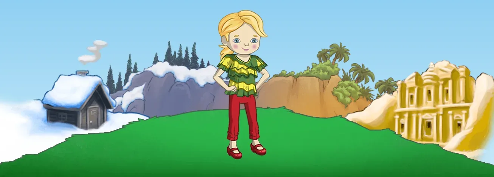

01What I owned
As Lead Designer on the project, it was my goal to design and pitch features that focused on social and retention features, as well as implement multiple rewards for learning and exploring.
- Designed the main hub world that connected all players together
- Retention features: a members-only mansion, a daily prize chest and a coin waterfall
- Customizable avatars, personal spaces and pets, and the inventory to hold it all
- Designed an in-game economy to sustain long-term engagement across the full content offering
- Led live feature design and iteration across all new product development
- Used activity data and player metrics to tune existing features and validate new content
- Wrote narrative copy
- Pitched and defended game features to owners without a games background
02Where it started
Petra's Planet was an online game platform for kids with the goal of educating them about real world cultures.
It launched in May 2012, before I joined, as a virtual world for children aged 6 to 11, with four countries to explore (Sami land, Senegal, Sri Lanka and Jordan) and more than 47 mini-games.

When I came aboard, the game was already live, but it was missing an element of 'magic'. It felt empty and disconnected. There was also no reward structure or sense of play when completing the education lessons.
The project had next to no retention and was really struggling to keep users on day 2, let alone day 30 or much further.
03Bringing players together
First was the design of a main hub world where all players would load into. Previously, players would be loaded into a randomized location and left to explore from there. Connecting everyone together encourages players to socialize and make friends, so they could then explore the world together.

Some common retention features were also implemented, such as a 'members only' mansion, a daily prize chest, and a magical waterfall that would pour coins to collect a couple of times a day.
04Rewards and economy
In order to reward players for exploring and completing missions, customizable avatars, personal spaces and, later, pets were added to the game. This allowed for many more things for players to buy, and gave the ability for special objects to be given to players to wear, display in their homes or dress their pets with.

I also designed an entire economy to further keep users engaged with all the game has to offer.
And of course, with all of that, you needed something to carry it all in!

05Making the case
When first proposed, these features were met with great apprehension because they were not educational. When I first pitched the inventory (originally a backpack), it was met with "that's silly! A couch can't fit in a backpack."
The owners of the company did not have a games background, so it took time to explain the value of these features and how they made a complete game loop, which would encourage players to engage in the educational components even more.
These features eventually became celebrated and paved the road for more magic in later updates.
I transformed this game into an online space that kids wanted to come back to by improving social interactions, adding desirable social spaces, and creating simple and repeatable reward loops. It significantly increased user retention and monetization potential.
06What I learned
That project taught me how to read player behavior data, identify what's not working, and design solutions that move the needle. It also taught me how to create spaces where players make their own stories and connections.